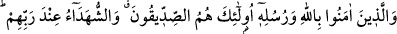
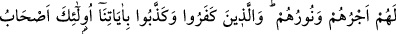
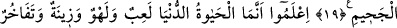
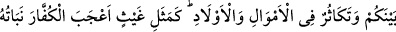
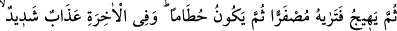
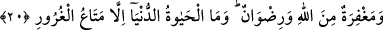
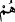
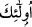

DÜNYA HAYATI
19. Allah’a ve peygamberlerine îman edenler, (evet) işte onlar, Rableri yanında
sözü özü doğru olanlar ve şehidlik mertebesine erenlerdir. Onların mükâfâtları ve
nûrları vardır. İnkâr edip de âyetlerimizi yalanlayanlara gelince, onlar da
cehennemin adamlarıdır.
20. Bilin ki dünya hayatı ancak bir oyun, eğlence, bir süs, aranızda bir övünme ve
daha çok mal ve evlât sâhibi olma isteğinden ibârettir. Tıpkı bir yağmur gibidir ki,
bitirdiği çiftçilerin hoşuna gider. Sonra kurur da sen onun sapsarı olduğunu
görürsün; sonra da çer çöp olur. Âhirette ise çetin bir azap vardır. Yine orada
Allah’ın mağfireti ve rızâsı vardır. Dünya hayatı aldatıcı bir geçimlikten başka bir
şey değildir.
“Allah’a ve Peygamberine îman edenler,” kısmı mübtedâdır “(evet) işte bunlar,”
kısmı ikinci mübtedâdır. “Onlar,” da üçüncü mübtedâdır, haberi sonra gelen şu
cümledir: “Sözü özü doğru olanlar ve şehidlik mertebesine erenlerdir.” Bu da
haberiyle beraber önceki cümlenin haberidir. Ya da
/onlar zamiri fasıl olup,
sonrasındaki
/işte bunlar ifâdesinin haberidir. Böylece cümle mevsûlün yâni
’nin haberi olur. “Rableri yanında” Sıddîklerin ve şehidlerin bilinen mertebeleri
sebebiyle, mertebelerin yüceliği ve mekânın yüksekliğiyle Rablerinin yanında yüksek
bir makamdadırlar. Onlar, tasdik etmekte öne geçenler ve Allah yolunda isteyerek şehîd
olanlardır.
Fethu’r-Rahmân adlı eserde şöyle denilmiştir: Sıddîk, doğru sözü çok olan kimsenin
vasfıdır. Bunlar zamanlarında İslâm’a herkesten önce giren bu ümmetten sekiz kişi olup
Ebû Bekir, Ali, Zeyd, Osman, Talha, Zübeyr, Sa’d ve Hamza’dır. Dokuzuncuları da
Ömer b. Hattab’dır (r.a.). Her ne kadar Hz. Ömer kırkıncı müslüman sayısını
tamamlamış ise de bilinen hâlis niyeti ve ihlâsı sebebiyle Allah onu da bunların arasına